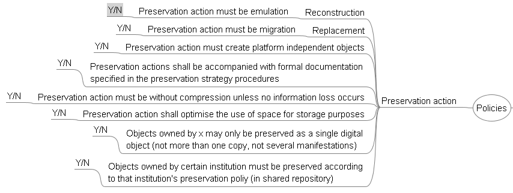
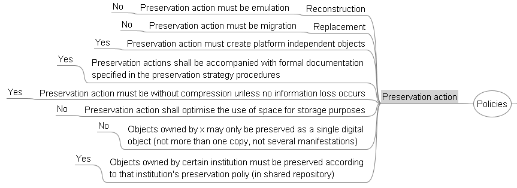
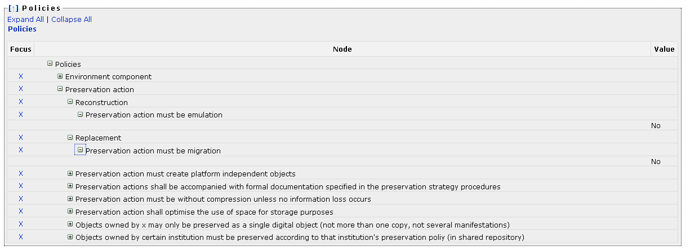

This page explains how you can specify a policy tree.
This page explains how you can specify a policy tree.
Organizations differ in many ways, type, size, direction, just to to name a few. That's why apart from technical and intellectual properties of digital objects also the strategy, policy, goals and constraints of the institution are an integral part of the preservation plan.
Usually organizations have created documents describing their policies, strategies, workflows, plans, and goals to provide guidance.
In the course of the Planets project a conceptual model of organizational digital preservation policies and strategies has been created. It incorporates relevant organisational characteristics and strategic directions to support the planning process in digital preservation projects.
Relevant policies have been structured in tree form which can be used as a template for defining your organizational policies. The template can be downloaded here: >Policy template<
Based on the policy tree you can model you policies by replacing the leaves, which denote the scale of the policy, by their actual values. You should remove policies you don't have in place by simply removing the node forming the policy.
In the tree, policies have been grouped into several levels, as for instance shown in the screenshot below. The screenshot shows policies pertaining to Preservation Action. Leaves in the tree denote scales the particular policy can be measured in. Policy Preservation Action must be emulation can be answered either Yes, or No.
After all scales have been replaced by their actual values, the policy tree might look like follows:
The workflow step 'Define Basis' allows to upload the policy tree which has been saved as Freemind file (.mm).
After the tree has been uploaded (by pressing the button 'Upload File') Plato displays the tree and allows you to store the policies with the preservation project.
